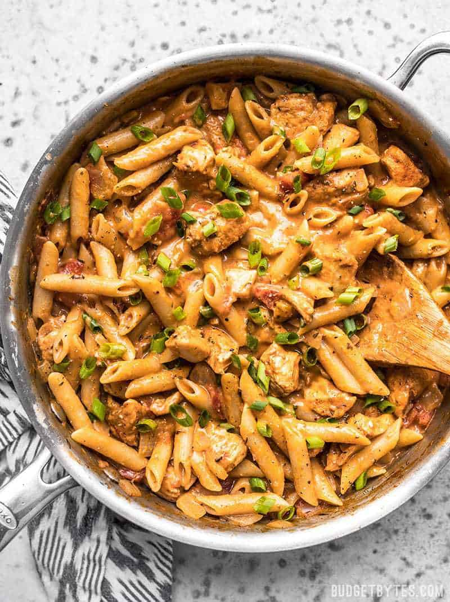

Chiken Pasta

Description
This is the first dish I cooked for my wife. A family recipe that's evolved over the
years, accumulating gratuitous amounts of butter, cheese, and cream.
- 2 tbsp olive oil
- 12 ounces sweet italian sausage
- 1/2 pound chicken thights
- 3 cloves garlic, diced
- 1 tsb red pepper flakes
- 1/3 lbs brown mushrooms
- 2 cups dry white wine
- 1/2 cup heavy cream
- 1/4 cup graded parm
- 1 lbs penne
Steps
- Heat half of the olive oil in a large sauce pan or dutch oven.
- Brown the sausage, then remove to a plate leaving fat in the pan
- Brown the sliced chicken thighs in the sausage fat
- Remove the thighs to the sausage plate
- Get pasta water boiling and cook to manufacturer's instructions
- Add the rest of the oil and cook the pepper flake and garlic until fragrant (do not burn!)
- Add the sliced mushrooms and cook until soft
- Add the white wine and reduce by about half
- Add about 1/4 cup of pasta water before draining
- Add heavy cream and parm to the sauce
- Add drained pasta to the sauce and continue to stir on low heat until sauce thickens